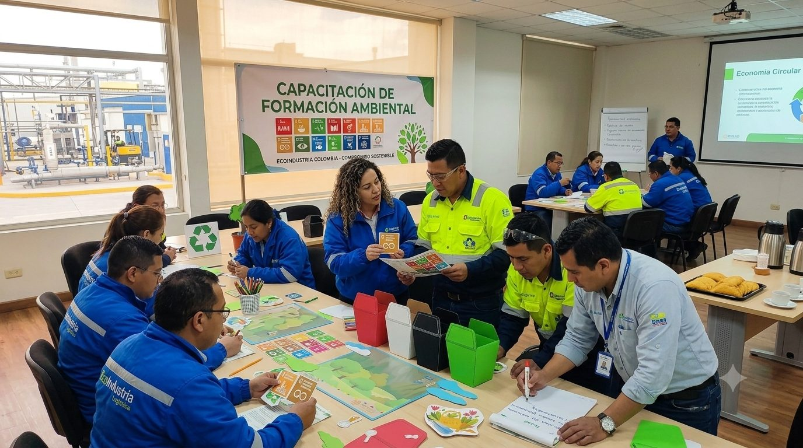
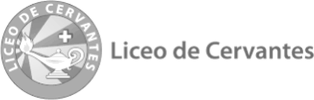
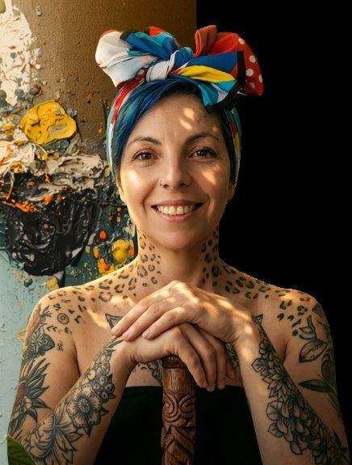

Operación consciente por un entorno sostenible
Transformando hábitos, optimizando resultados
Ingenieros Wilder y Yaser, gracias por la confianza. Esta es la versión actualizada de la propuesta aprobada: el alcance, el cronograma de las tres jornadas y la inversión para que los 255 colaboradores de la Imprenta Nacional vivan la Política Ambiental en su trabajo diario.

- 255colaboradores de planta y áreas administrativas
- 3jornadas: 20, 27 y 30 de noviembre
- 4conferencias de 1 hora para 60 personas cada una
- 9 hde taller en los puestos: 3 h por jornada, 85 personas
- 255kits de recordación para el equipo
- 2mediadores del conocimiento de Simoné en cada jornada
Objetivo de aprendizaje
De conocer la política a vivirla en la operación
Estandarizar y sensibilizar al personal sobre las prácticas operativas sostenibles, para garantizar la interiorización de la Política Ambiental y del Programa de Gestión Integral de Residuos Peligrosos (PGIRP), mediante metodologías lúdicas que permitan la trazabilidad del conocimiento y la mejora continua en la gestión de recursos.
Descripción general
Ecoeficiencia 360 es una estrategia de intervención vivencial que cierra la brecha entre la Política Ambiental y el comportamiento operativo.
El proyecto usa conferencias, visitas a los puestos de trabajo y elementos físicos de recordación (gamificación) para que los 255 colaboradores no solo conozcan, sino que integren los estándares ambientales en su ejecución diaria, reduciendo la variabilidad operativa y los riesgos asociados al cumplimiento normativo.
Beneficios estratégicos · 255 colaboradores
Lo que gana la operación cuando el equipo se apropia de la política
Cumplimiento
Cultura de cumplimiento
Mitigación de riesgos legales y sanciones mediante la adopción correcta del PGIRP.
Bienestar
Bienestar organizacional
Vínculo directo entre el compromiso ambiental y la salud mental, con un liderazgo centrado en la persona.
8–12%
Eficiencia energética e hídrica
Reducción proyectada en consumos tras la optimización de prácticas.
15%
Gestión de residuos
Reducción en la tasa de contaminación de residuos aprovechables.
+20%
Retención de conocimiento
Incremento en las evaluaciones de competencia ambiental después de la intervención.
30%
Mitigación de riesgos
Disminución en hallazgos de auditoría interna.
Los porcentajes son metas proyectadas. Su seguimiento se hace con el sistema de evaluación del proyecto y con los indicadores ambientales que lleva la Imprenta Nacional.
Estructura de la actividad · 3 jornadas
Una misma metodología, tres jornadas, todo el equipo
La metodología se replica en tres jornadas para cubrir a los 255 colaboradores, manteniendo la consistencia en el mensaje y en la evaluación. Así se vive cada jornada:
- 8:15 – 9:15 a.m.
1 hora · 60 personasConferencia: Visión y PolíticaAlineación estratégica y KPI ambientales: por qué la política importa en cada puesto. - 9:30 a.m. – 12:30 p.m.
3 horas · 85 personasTaller: visitas a los puestos de trabajoEl equipo de Simoné recorre cada puesto, en planta y en áreas administrativas: entrega el rompecabezas a cada colaborador y conversa sobre Residuos (PGIRP), Eficiencia (energía y agua) y la importancia de conocer la Política Ambiental.Cuestionario de conocimientoAl final del taller compartimos un enlace para que cada colaborador responda el cuestionario. - 2:30 – 3:30 p.m.
Solo día 1 · 1 hora · 60 personasCuarta conferencia: Visión y PolíticaUna sesión adicional en la tarde del 20 de noviembre para llegar a más colaboradores.
En cada jornada acompañan 2 mediadores del conocimiento de Simoné. Los grupos se acuerdan con el Grupo de Mejora Continua según los turnos de la planta.
Taller en los puestos de trabajo · 9:30 a.m. – 12:30 p.m.
Llevamos la política a cada puesto de trabajo
Los 2 mediadores del conocimiento de Simoné visitan a cada colaborador en su puesto, le entregan su rompecabezas y conversan con él sobre tres temas conectados con lo que pasa todos los días en la operación.
Tema 1
Residuos (PGIRP)
Clasificación, manejo y disposición correcta de residuos, con énfasis en los residuos peligrosos de la operación.
Tema 2
Eficiencia: energía y agua
Prácticas concretas para reducir consumos en cada área y entender su efecto en los indicadores.
Tema 3
La Política Ambiental
Por qué es importante conocerla y cómo se refleja en las decisiones de cada puesto. El rompecabezas resume sus 3 pilares.
Incentivos y reconocimiento · valor agregado
Un estímulo para quienes más se apropian de la política
Para fomentar la excelencia y la participación activa, el proyecto incluye un programa de estímulos basado en la participación durante las jornadas y en la evaluación.
Taller de Alto Rendimiento Humano · 60 minutos
Una sesión especial para los de mejor desempeño
Los 20 colaboradores con el mejor desempeño y mayor apropiación de conceptos son seleccionados para una sesión especializada en:
- Gestión del estrés en entornos operativos
- Herramientas para el manejo de la ansiedad
- Técnicas de higiene del sueño para mejorar la recuperación y el desempeño
Entregables y gestión del conocimiento
Lo que queda en la Imprenta cuando terminan las jornadas
255
Kit de empoderamiento
Rompecabezas de 12 × 12 cm en papel ecológico con empaque sostenible. Cada uno resume los 3 pilares de la Política Ambiental y funciona como recordatorio en el puesto de trabajo.
3
Campaña digital: infografías
Kit de comunicación con tres infografías sobre los temas centrales de la Política Ambiental.
1
Invitación digital
Pieza creativa para convocar a los colaboradores y asegurar la asistencia.
1
Cuestionario e informe de resultados
Plataforma digital con 3 módulos (Política Ambiental, Ahorro de Energía y PGIRP) y 9 preguntas, que los colaboradores responden al final de los talleres. Entregamos a la empresa el informe de resultados. Ver la plataforma →
Experiencias de Simoné con equipos de trabajo.
Experiencia con empresas
Empresas que han confiado en Simoné
Organizaciones de distintos sectores han vivido con sus equipos nuestras experiencias de desarrollo humano a través del arte.



Testimonios
Lo que dicen quienes han vivido la experiencia
Con Simoné pude comunicar de manera objetiva a la comunidad en general las mejores prácticas para prevenir un ACV. Fueron creativos, innovadores y muy fáciles de entender.
Diana María CastelblancoCoordinadora Asistencial Centros de Cuidado Clínico · Fundación Santa Fe de Bogotá
Superaron nuestras expectativas: encontraron el equilibrio entre las necesidades comerciales y las necesidades humanas que tenía nuestro equipo del call center.
Katherine ArenasLíder Centro de Servicio · Ajover - Darnell
Una experiencia de reflexión, empoderamiento y llamado a sentir de una forma diferente. Nos ayuda a reconocernos, valorar lo que nos rodea y motivarnos para el trabajo en equipo.
Diana María ÁlvarezProductos Alimenticios Doria
Inversión del proyecto
Un solo valor para todo el proyecto
| Componente | Alcance |
|---|---|
| Jornadas | 3 jornadas para 255 colaboradores: 20, 27 y 30 de noviembre de 2026 |
| Conferencias | 4 conferencias “Visión y Política” de 1 hora para 60 personas cada unaUna por jornada en la mañana y una adicional el 20 de noviembre de 2:30 a 3:30 p.m. |
| Talleres | 9 horas de taller con visitas a los puestos de trabajo: 3 horas por jornada, 85 personas cada díaEntrega de rompecabezas y conversación sobre Residuos (PGIRP), Eficiencia (energía y agua) y la Política Ambiental |
| Obsequios | 255 kits de empoderamiento (rompecabezas ecológicos) |
| Campaña digital | 3 infografías, invitación digital, plataforma del cuestionario de conocimiento e informe de resultados |
| Equipo Simoné | 2 mediadores del conocimiento en cada jornada |
| Valor agregado | Taller de Alto Rendimiento Humano para 20 colaboradores (60 min) |
Inversión total
$8.435.000 + IVAValor en pesos colombianos antes de IVA, según el presupuesto asignado en el proceso de contratación. No se maneja anticipo.
Para iniciar necesitamos recibir la siguiente información
- Política Ambiental de la Imprenta Nacional.
- Documentos relacionados con Residuos (PGIRP) y Eficiencia (energía y agua).
Mediadora líder
Quién acompaña el proyecto

Nathalia Andrea Velasco
CEO y fundadora de Simoné · Magíster en Educación · Estratega de Bienestar Regenerativo
Estratega en procesos de transformación humana con 16 años de trayectoria diseñando y liderando proyectos interdisciplinarios que integran la educación, las artes plásticas y la gestión cultural. Desde 2013 lidera Simoné, donde ha consolidado una metodología que usa la creatividad y el contacto con la naturaleza para humanizar las organizaciones y fortalecer el tejido emocional de los equipos.
Magíster en Educación de la Universidad de La Sabana y profesional en Estudios y Gestión Cultural (EAN). Se especializa en la prevención y gestión del burnout corporativo. Ponente en TEDx Agua Linda con la charla “Creer en crear para educar”.
Ver perfil en LinkedIn →En cada jornada participan 2 mediadores del conocimiento de Simoné, profesionales en teatro, danza contemporánea, diseño industrial y artes plásticas, que trabajan bajo el modelo de educación experiencial de Simoné.
Próximos pasos
Pongamos en marcha Ecoeficiencia 360
- Formalizamos la aprobación con el contrato u orden de servicio.
- Hacemos una reunión de alineación con el Grupo de Mejora Continua para definir los grupos, horarios y espacios de las jornadas del 20, 27 y 30 de noviembre.
- Validamos con ustedes los contenidos de la Política Ambiental y del PGIRP para las infografías, la evaluación y los rompecabezas.
- Producimos los 255 kits y lanzamos la invitación y la campaña digital.
- Realizamos las tres jornadas, el Taller de Alto Rendimiento Humano y entregamos a la empresa el informe de resultados del cuestionario de conocimiento.